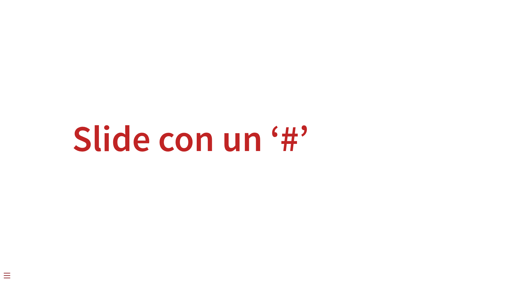
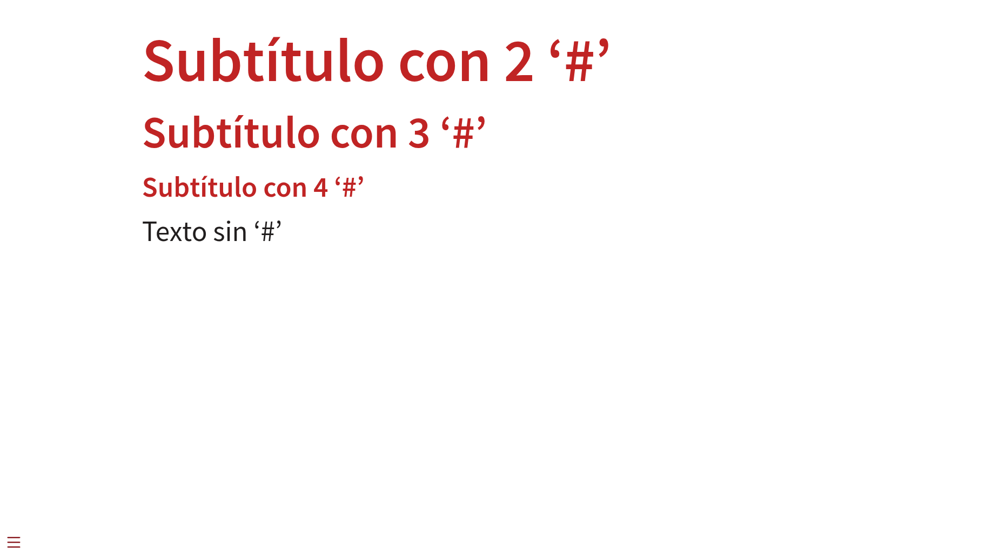
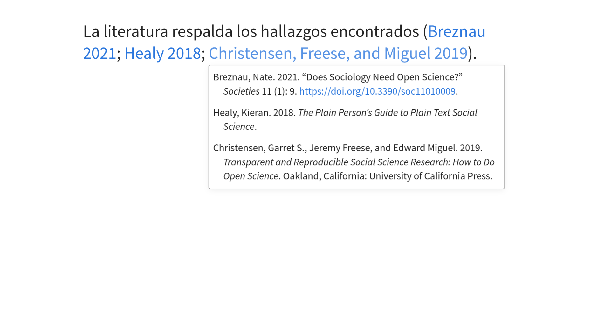
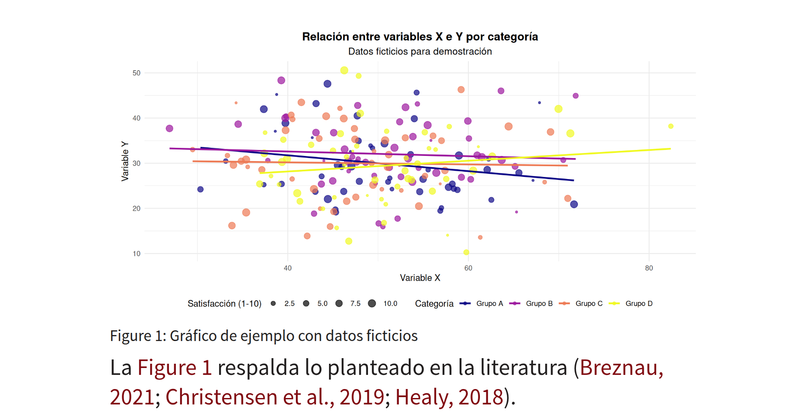
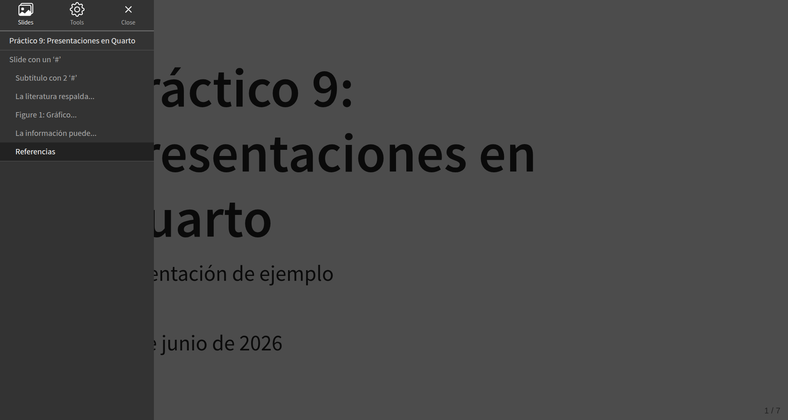
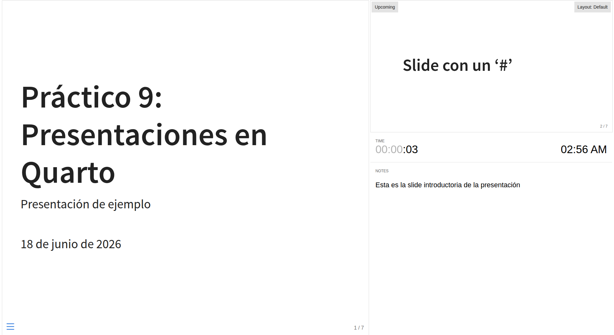
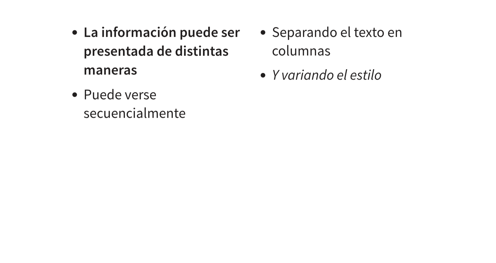
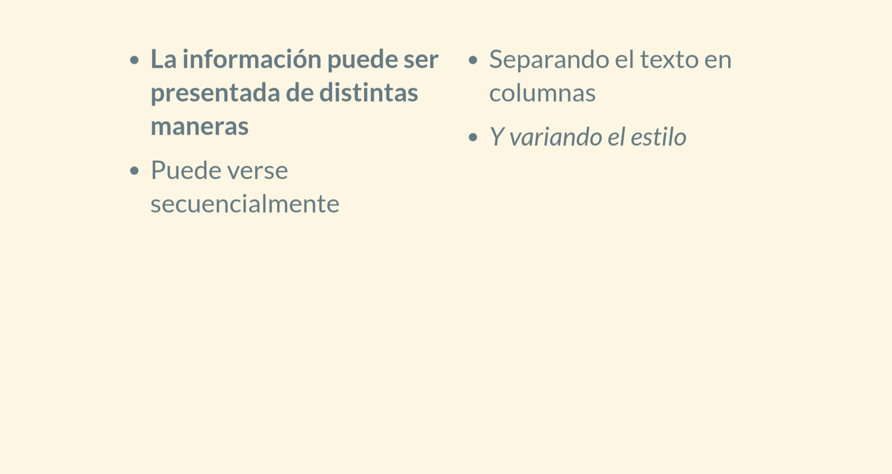
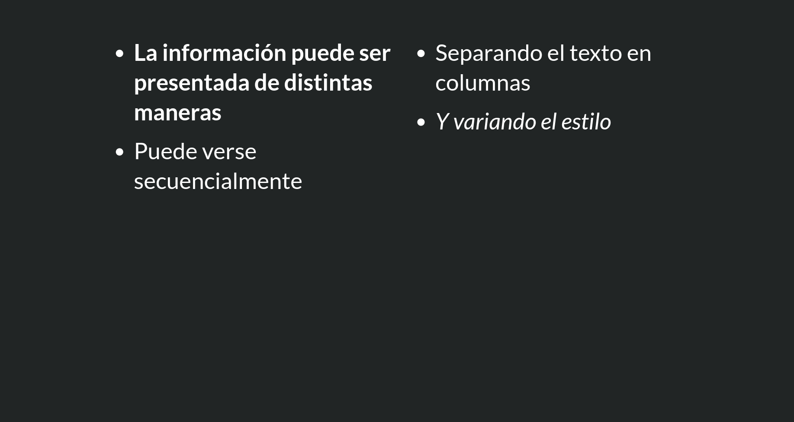

## {background-color="#212525"}
::::{.columns}
:::{.column width="50%"}
- La información puede ser presentada de distintas maneras
- Puede verse secuencialmente
:::
:::{.column width="50%"}
- Separando el texto en columnas
- Y variando el estilo
:::
::::Práctico 9: Presentaciones en Quarto
Correspondiente a la sesión del jueves, 18 de junio de 2026
Introducción
Para la divulgación científica en el marco de conferencias, ponencias y cátedras, Quarto ofrece el formato de salida de presentaciones. El objetivo de este práctico es entender la estructura general de una presentación en Quarto y las funcionalidades que ofrece.
Para ello, utilizaremos esta presentación de ejemplo
¿Por qué usar Quarto para presentaciones?
Permite controlar las versiones (Git)
Facilita la difusión (GitHub Pages)
Utiliza texto plano y todos los recursos de Quarto (markdown)
Permite combinar texto y código (mantiene la esencia de documento dinámico)
Es compatible con otras herramientas de acceso abierto (Zotero)
1 Estructura de una presentación
1.1 YAML
---
format:
revealjs:
theme:
- default
editor: source
---Una de las ventajas de Quarto es que todos sus formatos de salida se construyen a partir de un YAML. Como recordarán, en el YAML se señalan las opciones generales de su documento. Aquí pueden observar un ejemplo básico de un YAML para presentación.
Importante
Dentro del YAML, el formato debe especificarse como revealjs. En cualquier otro caso, el documento no se renderizará como presentación.
1.2 Slides
Todo el contenido de su presentación se contiene dentro de slides.
Cada slide se define a partir de un ‘#’
Una slide puede ser indicada con ‘#’ o ‘##’. Si se utilizan más numerales (#), estos serán leídos como subtítulos dentro de una slide (sigue la lógica de anidación de contenido ofrecida por markdown).
Por ejemplo, una slide como esta:
# Slide con un '#'Se vería así renderizada:

Mientras que una slide así:
## Subtítulo con 2 '#'
### Subtítulo con 3 '#'
#### Subtítulo con 4 '#'
Texto sin '#'Al renderizarse, se vería como esto:

2 Funcionalidades
2.1 Referencias (Zotero)
Las presentaciones en Quarto también son compatibles con funcionalidades que hemos visto anteriormente. Dentro de una presentación se pueden integrar las referencias bibliográficas almacenadas en Zotero. Para ello, se debe agregar la carpeta .bib en el YAML de nuestro documento de presentación, y con ello ya se podrán utilizar las referencias exportadas.
Nota
Aquí pueden revisitar el práctico de automatización de referencias bibliográficas
Este es un ejemplo de una presentación utilizando referencias de Zotero:

2.2 Figuras a partir de código
Además de las referencias, es posible ejecutar código y visualizar figuras en las presentaciones de Quarto. Esto sigue la misma lógica que los documentos dinámicos, solamente que debe localizarse el output de la tabla y/o gráfico dentro de una slide. Por ejemplo, tenemos este código en una slide:
##
#| label: fig-ejemplo
#| fig-cap: "Gráfico de ejemplo con datos ficticios"
#| warning: false
#| message: false
# Cargar librerías necesarias
library(ggplot2)
library(dplyr)
# Crear datos ficticios
set.seed(123) # Para reproducibilidad
datos_ejemplo <- data.frame(
categoria = rep(c("Grupo A", "Grupo B", "Grupo C", "Grupo D"), each = 50),
valor_x = rnorm(200, mean = 50, sd = 10),
valor_y = rnorm(200, mean = 30, sd = 8),
satisfaccion = sample(1:10, 200, replace = TRUE)
)
# Crear el gráfico
ggplot(datos_ejemplo, aes(x = valor_x, y = valor_y, color = categoria)) +
geom_point(aes(size = satisfaccion), alpha = 0.7) +
geom_smooth(method = "lm", se = FALSE) +
labs(
title = "Relación entre variables X e Y por categoría",
subtitle = "Datos ficticios para demostración",
x = "Variable X",
y = "Variable Y",
color = "Categoría",
size = "Satisfacción (1-10)"
) +
theme_minimal() +
theme(
plot.title = element_text(hjust = 0.5, size = 14, face = "bold"),
plot.subtitle = element_text(hjust = 0.5, size = 12),
legend.position = "bottom"
) +
scale_color_viridis_d(option = "plasma") +
scale_size_continuous(range = c(1, 4))
La @fig-ejemplo respalda lo planteado en la literatura [@breznau_does_2021; @healy_plain_2018; @christensen_transparent_2019].Al renderizar, se verá de esta forma:

2.3 Menú
Al clickear en el menú inferior izquierdo, se despliega una barra con dos opciones principales: Slides y Tools. La primera nos permite ver las slides que componen nuestra presentación y digirirnos a una en específico sin tener que transitar una por una.

Además, al apretar Esc dentro de la presentación, podrán ver las slides minimizadas y navegar por ellas.
Por su parte, Tools ofrece distintas maneras de visualizar la presentación. El más útil es el Speaker mode, ya que da la posibilidad de ver la presentación desde una vista panorámica: se puede ver la slide actual, la siguiente y notas ancladas a cada slide.

Para incluir notas en las slides, debe generarse un bloque así:
:::{.notes}
:::Y dentro del bloque escribir el contenido que los oriente en la presentación.
Importante
Las notas sólo se visualizan en el Speaker view; no podrán verlas si están en el modo default de la presentación
3 Personalización
3.1 Formato: columnas
Las presentaciones en Quarto tienen un gran margen de personalización, el cual puede ser aplicado a toda la presentación como a slides específicas. En temas de formato de contenido, el texto dentro de una slide puede ser presentado en columnas, las cuales ayudan a organizar de mejor manera la información. Este es un ejemplo de las columnas:
##
::::{.columns}
:::{.column width="50%"}
- La información puede ser presentada de distintas maneras
- Organizando los espacios
:::
:::{.column width="50%"}
- Separando el texto en columnas
- Y variando el estilo
:::
::::Las columnas funcionan en bloques anidados, es decir, primero se señala un bloque general (:::{.columns}) y dentro de él se pueden generar múltiples columnas. En este caso, se generan dos columnas con el mismo ancho para que compartan un espacio uniforme en la slide. Al renderizar, esto se verá así:

3.2 Temas
Las presentaciones en Quarto tienen distintos temas disponibles para personalizaciones estéticas, los cuales son propios de revealjs. Para integrar un tema a la presentación, solamente se debe ajustar la opción theme en el YAML:
---
format:
revealjs:
theme:
- solarized
editor: source
---Después de renderizar, esto se verá así:

Nota
Aquí pueden revisar todos los temas disponibles de presentaciones en Quarto
Los temas se aplican a la totalidad del documento. Si se quisiera cambiar el color de una slide en específico, debe aplicarse {background-color=""} en la misma línea donde se define la slide:
El resultado es el siguiente:

3.3 SCSS
En la línea de los cambios estéticos, hay cosas que se puedenr regular dentro del mismo documento y otras que se deben señalar en un archivo separado. En este contexto, SCSS (Sacy Cascade Style Sheets) es un lenguaje de programación dedicado específicamente a modificaciones del formato observable, cuyo antecesor es el CSS. Este código se debe integrar al YAML de una presentación (se modifica la opción de theme) para que se apliquen las reglas de estilo. Por ejemplo, si nuestro CSS se llama custom.css:
---
format:
revealjs:
theme:
- custom.scss
editor: source
---Volviendo al último ejemplo, si queremos que todas las slides sean del color #212525, nuestro archivo CSS se vería algo así:
.reveal .slides section {
background-color: #212525;
}Y esto hará que todas las slides tengan el color #212525 de fondo.
Nota
Para aprender más sobre CSS: aquí
3.4 Opciones de YAML
Por último, aquí se muestran algunas de las opciones más útiles para integrar en las presentaciones en Quarto
| Opción | Acción |
|---|---|
slide-number |
Se visualiza el número de las slides de la presentación |
transition |
Define el estilo de transición de una slide a otra |
transition-speed |
Ajusta la velocidad en que se cambia de una slide a otra |